第6章
摆体的运动与阻力
命题24 定理19
几个摆体的摆动中心到悬挂中心的距离均相等，则摆体物质的量的比等于在真空中重量的比与摆动时间比的平方的乘积。
因为一个已知的力在已知时间内所能使已知物体产生的速度正比于该力和时间，反比于物体，力或时间越大，或物体越小，则所产生的速度越大。这是第二运动定律的内容。如果各摆长度相同，在到摆距离相等处运动力正比于重量：则如果两个摆体掠过相等弧度，把这两个弧度分为若干相等部分；由于摆体掠过弧的对应部分所用的时间正比于总摆动时间，摆过各对应部分的速度相互间的比，正比于运动力和总摆动时间，反比于物质的量：所以物质的量正比于摆动的力和时间，反比于速度。但速度反比于时间，因而时间正比于而速度反比于时间的平方，因而物质的量正比于运动力和时间的平方，即正比于重量与时间的平方。
证毕。
推论Ⅰ．如果时间相等，则各自物质的量正比于重量。
推论Ⅱ．如果重量相等，则物质的量正比于时间的平方。
推论Ⅲ．如果物质的量相等，则重量反比于时间的平方。
推论Ⅳ．完全等价地，由于时间的平方正比于摆长，所以如果时间与物质的量都相等，则重量正比于摆长。
推论Ⅴ．一般地，摆体的物质的量正比于重量和时间平方，反比于摆长。
推论Ⅵ．但在无阻力介质中，摆体的物质的量正比于相对重量和时间平方，反比于摆长。因为前面已证明，相对重量是物体在任意重介质中的运动力；所以它在无阻力介质中的作用与真空中的绝对重量相同。
推论Ⅶ．由此得到一种方法，用以比较物体各自所含物质的量，以及同一物体在不同处所的重量，以了解重力变化情况。我通过极为精密的实验发现，物质含物质的量总是正比于它们的重量。
命题25 定理20
在任意介质中受到的阻力正比于时间的变化率的摆体，与在比重相同的无阻力介质中运动的摆体，它们在摆动中在相同时间内都画出一条摆线，而且共同掠过成正比的弧段。
令物体D在无阻力介质中摆动时，在任意时间内画出的一段摆线弧为AB。在C点二等分该弧，使C为其最低点；则物体在任意处所D，或d ，或E受到的加速力，正比于弧长CD，或Cd ，或CE。令该力以这些弧表示；由于阻力正比于时间的变化率，因而是已知的，令它以摆线弧的已知段CO表示，取弧Od 比弧CD等于弧OB比弧CB：则摆体在有阻力介质中的d 点受到的力为力Cd 超出阻力CO的部分，以弧Od 表示，它与摆体D在无阻力介质中的处所D受到的力的比，等于弧Od 比弧CD；而在处所B，等于弧OB比弧CB。所以如果两个摆体D，d 自处所处B受到这二个力的推动，由于在开始时力正比于弧CB和OB，则开始的速度与所掠过的弧比值相同，令该弧为BD为Bd ，则余下的弧CD，Od 比值也相同。所以正比于弧CD，Od 的力在开始时也保持相同比值，因而摆体以相同比值共同摆动。所以力，速度和余下的弧CD，Od 总是正比于总弧长CB，OB，而余下的弧是共同掠过的。所以两个摆体D和d 同时到达处所C和O；在无阻力介质中的摆动到达处所C，而另一个在有阻力介质中的摆动到达处所O。现在，由于在C和O的速度正比于弧CB，OB，摆体仍以相同比值掠过更远的弧。令这些弧为CE和Oe 。在无阻力介质中的摆体D在E处受到的阻力正比于CE，而在有阻力介质中的摆体d 在e 处受到的阻力正比于力Ce 与阻力CO的和，即正比于Oe ；所以两摆体受到的阻力正比于弧CB，OB，即正比于弧CE，Oe ；所以以相同比值变慢的速度的比也为相同的已知比值。所以速度以及以该速度掠过的弧相互间的比总是等于弧CB和OB的已知比值。所以，如果整个弧长AB，a B也按同一比值选取，则摆体D和d 同时掠过它们，在处所A和a 同时失去全部运动。所以整个摆动是等时的，或在同一时间内完成的；而共同掠过弧长BD，Bd ，或BE，Be ，正比于总弧长BA，Ba 。
证毕。
推论．所以在有阻力介质中，最快的摆动并不发生在最低点C，而是发生在掠过的总弧长Ba 的二等分点O。而摆体由该点摆向点a 的减速度与它由B落向O的加速度相同。
命题26 定理21
受阻力正比于速度的摆体，沿摆线作等时摆动。
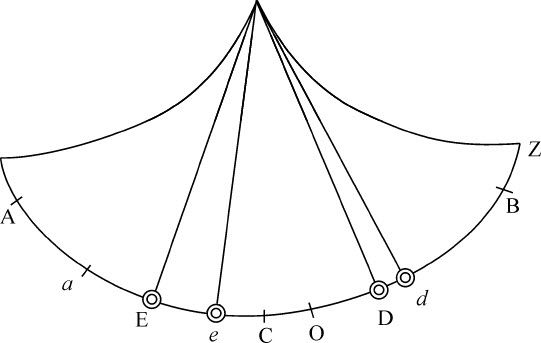
如果两个摆体到悬挂中心的距离相等，摆动中掠过的弧长不相等，但在对应弧段的速度的比等于总弧长的比；则正比于速度的阻力的比也等于该弧长比。所以，如果在正比于弧长的重力产生的运动力上叠加或减去这些阻力，则得到的和或差的比也为相同的比值；而由于速度的增量或减量正比于这些和或差，速度总是正比于总弧长；所以，如果速度在某种情况下正比于总弧长，则它们总是保持相同比值。但在运动开始时，当摆体开始下落并掠过弧时，此刻正比于弧的力所产生的速度正比于弧。所以，速度总是正比于尚未掠过的总弧长，而这些弧将在同一时间内画出。
证毕。
命题27 定理22
如果摆体的阻力正比于速度的平方，则在有阻力介质中摆动的时间，与在比重相同但无阻力介质中摆动的时间的差，近似地正比于摆动掠过的弧长。
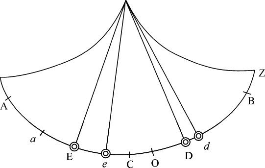
令等长摆在有阻力介质中掠过不等弧长A，B；则沿弧A摆动的物体的阻力比在B弧上对应部分摆动的物体的阻力等于速度平方的比，即近似等于AA比BB。如果弧B的阻力比弧A的阻力等于AB比AA，则沿弧A和B的摆动时间相等（由前一命题）。所以弧A的阻力AA或弧B的阻力AB在弧A上引起的时间超过在无阻力介质中的时间；而阻力BB在弧B上引起的时间超过在无阻力介质中的时间。而这些超出量近似地正比于有效力AB和BB，即正比于弧A和B。
证毕。
推论Ⅰ．因此，由在有阻力介质中不相等的弧摆动时间可以求出在比重相同的无阻力介质中的摆动时间。因为这个时间差比沿短弧摆动时间超出在无阻力介质中的时间等于两个弧的差比短弧。
推论Ⅱ．短弧摆动更近于等时性，极小的摆动其时间近似等于在无阻力介质中的时间。而作较大弧摆动所需时间略长，因为在摆体下落中受到使时间延长的阻力，与下落所掠过的长度相比，较之随后的上升所遇到的使时间缩短的阻力变大了。不过，摆动时间的长度似乎因介质的运动而延长。因为减速的摆体其阻力与速度比值较小，而加速的摆体该比值较匀速运动为大；因为介质从摆体获得某种运动，与它们作同向运动，在前一种受到的推动较强，后一情形较弱；造成摆体运动的快慢变化。所以就与速度相比较而言，在摆体下落时阻力较大，而上升时较小；这二者导致时间的延长。
命题28 定理23
如果摆体沿摆线摆动，阻力正比于时间的变化率，则阻力与重力的比，等于下落所掠过的整个弧长减随后上升的弧长的差值比摆长的二倍。
令BC表示下落掠过的弧长，Ca 为上升弧长，Aa 为二弧的差：其他条件与命题25的作图和证明相同，则摆体在任意处所D受到的作用力比阻力等于弧CD比弧CO，后者是差Aa 的一半。所以，在摆线的起点或最高点。摆体所受到的作用力，即重力，比阻力等于最高点与最低点C之间的摆线弧比弧CO；即（把它们都乘以2），等于整个摆弧或摆长的二倍比弧Aa 。
证毕。
命题29 问题6
设沿摆线摆动的摆体的阻力正比于速度的平方；求各处的阻力。
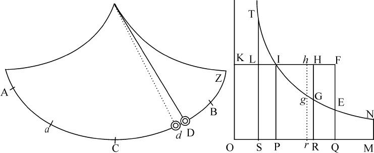
令Ba 为一次全摆动的弧长，C为摆线最低点，CZ为整个摆线的半长，等于摆长。要求在任意处所D摆体的阻力。在O，S，P，Q点分割直线OQ，使（作垂线OK，ST，PI，QE，以O为中心，OK，OQ为渐近线，作双曲线TIGE与垂线ST，PI，QE相交于T，I和E，通过点I作KF。平行于渐近线OQ，与渐近线OK相交于K，与垂线ST和QE相交于L和F）双曲线面积PIEQ比双曲线面积PITS等于摆体下落掠过的弧BC比上升掠过的弧Ca ；以及面积IEF比面积ILT等于OQ比OS。然后以垂线MN截取双曲线面积PINA，使该面积比双曲线面积PIEQ等于弧CZ比下落掠过的弧BC。如果垂线RG截取双曲线面积PIGR，使它比面积PIEQ等于任意弧CD比整个下落弧长BC，则在任意处所D的阻力比重力等于面积
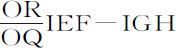
比面积PINM。因为，在处所Z，B，D，a 重力作用于摆体的力正比于面积CZ，CB，CD，Ca ，而这些弧正比于面积PINM，PIEQ，PIGR，PITS；令这些面积分别表示这些弧和力。令Dd 为摆体下落中掠过的极小距离；以极小面积RGgr 表示，夹在平行线RG，rg 之间。延长rg 到h ，使GHhg 和GRgr 为面积IGH，PIGR的瞬时减量。则面积
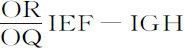
的增量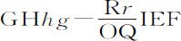
，或者，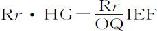
，比面积PIGR的减量RGgr 或Rr ·RG，等于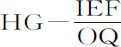
比RG；因而等于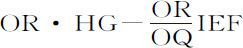
比OR·GR或OP·PI，即（因为OR·HG，OR·HR－OR·GR，ORHK－OPIK，PIHR和PIGR＋IGH相等）等于PIGR＋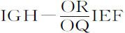
比OPIK。所以，如果面积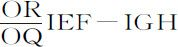
称为Y，且已知面积PIGR的减量RGgr ，则面积Y的增量正比于PIGR－Y。如果以V表示摆体在D处受重力作用的力，它正比于将要掠过的弧CD，以R表示阻力，则V－R为摆体在D处受到的总力，所以速度增量正比于V－R与产生它的时间间隔的乘积。而速度本身又正比于同时所掠过的距离增量而反比于同一个时间间隔。所以，由于命题规定阻力正比于速度平方，阻力增量（由引理2）正比于速度与速度增量的乘积，即正比于距离的瞬与V－R的乘积；所以，如果给定距离增量正比于V－R；即，如果以PIGR表示力V，以任意其他面积Z表示阻力，则正比于PIGR－Z。
所以，面积PIGR按照给定的负瞬而均匀减小，而面积Y则以PIGR－Y的比率增大，面积Z按PIGR－Z的比率增大。所以，如果面积Y和Z是同时开始的，且在开始时是相等的，则它们通过增加相等的量而持续相等；而又以相似的方式减去相等的变化率而减小，并一同消失。反之，如果它们同时开始和消失，则它们有相同的瞬因而总是相等。因为，如果阻力Z增加，则摆体上升所掠过的弧Ca 和速度都减少；而运动和阻力都消失的点向点C趋近，因而阻力比面积Y消失得快。当阻力减小时，则又发生相反的过程。
面积Z产生和消失于阻力为零之处，即运动开始处，弧CD等于弧CB，而直线RG落在直线QE上；以及运动终止处，弧CD等于弧Ca ，而直线RG落在直线ST上。面积Y或
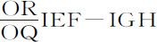
也产生和消失了阻力为零之处，所以在该处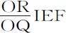
和IGH相等。即（如图），在该处直线RG先后落在直线QE和ST上。所以这些面积同时产生和消失，因而总是相等。因此，面积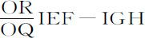
等于表示阻力的面积Z，它比表示重力的面积PINM，等于阻力比重力。推论Ⅰ．在最低处所C，阻力比重力等于面积
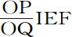
比面积PINM。推论Ⅱ．在面积PIHR比面积IEF等于OR比OQ处，阻力有最大值。因为在此情形下它的变化率（即，PIGR－Y）为零。
推论Ⅲ．也可以求出在各处的速度，它正比于阻力的平方根变化，而且在运动开始时等于在无阻力介质中沿相同摆线摆动的摆体速度。
但是，由于在本命题中求解阻力和速度很困难，我们拟补充下述命题。
命题30 定理24
如果直线a B等于摆动体所掠过的摆线弧长，在其上任意点D作垂线DK，该垂线比摆长等于摆体在该点受到的阻力比重力：则在整个下落过程和随后的整个上升过程所掠过的弧差乘以相同的弧的和的一半等于所有垂线构成的面积BKa 。
令一次全摆动掠过的摆线弧长以与它相等的直线a B表示，而在真空中掠过的弧长以长度AB表示。在C点二等分AB，则C表示该摆线的最低点，而CD正比于重力所产生的力，它使摆体在点D受到沿摆线切线方向的作用，与摆长的比等于在D点的力比重力。所以，令该力以长度CD表示，而重力以摆长表示；如果在DE上取DK比摆长等于阻力比重力，则DK表示阻力。以C为中心，间隔CA或CB为半径画半径BEe A。令物体在极短时间里掠过距离Dd ；作垂线DE，de 与半圆相交于E，e ，则它们正比于摆体在真空中由点B下落到D和d 所获得的速度。这已由第一编命题52证明过。所以，令这些速度以垂线DE，de 表示；令DF为摆体在有阻力介质中由B下落到D的速度。如以C为圆心、间隔CF为半径画圆Ff M与直线de 和AB相交于f 和M，则M为这样的处所，如果摆体此后在上升中不受阻力作用可到达于此，df 为其在d 点获得的速度。因此，如果Fg 表示摆体掠过极短距离Dd 由于介质阻力而失去速度的瞬；而取CN等于Cg ；则N也是这样一个处所，如果摆体不再受到阻力，它可以上升到该处，而MN表示由速度损失造成的上升减量。作Fm 垂直于df ，则阻力DK造成的速度DF的减量Fg ，比力CD产生的同一速度的增量fg ，等于作用力DK比作用力CD。但因为三角形Fmf ，Fhg ，FDC相似，fm 比Fm 或Dd 等于CD比DF；将对应项相乘，得到Fg 比Dd 等于DK比DF。而Fh 比Fg 也等于DF比CF；也将对应项相乘，得到Fh 或MN比Dd 等于DK比CF或CM；所以，所有MN·CM的和等于所有Dd ·DK的和。在动点M设直角纵坐标总是等于不定直线CM，它在连续运动中与整个长度Aa 相乘；该运动中产生的四边形，或相等的矩形
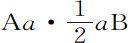
，等于所有的MN·CM的和，因而等于所有Dd ·DK的和，即等于面积BKVTa 。证毕。
推论．由阻力的规律，以及弧Ca ，CB的差Aa ，可以近似求出阻力与重力的比。
因为，如果阻力DK是均匀的，则图形BKTa 是Ba 和DK构成的矩形；因而
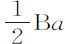
与Aa 构成的矩形等于Ba 与DK构成的矩形，而DK等于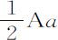
。所以，由于DK表示阻力，摆长表示重力，则阻力比重力等于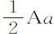
比摆长；这与命题28的证明完全相同。如果阻力正比于速度，则图形BKTa 近似于椭圆。因为，如果摆体在无阻力介质中的一次全摆动掠过弧长BA，其在任意点D的速度应正比于直径AB上的圆的纵坐标。所以，由于Ba 是在有阻力介质中，BA是在无阻力介质中近似正比于时间掠过的，所以在Ba 上各点的速度比在长度BA上对应点的速度近似等于Ba 比BA，而在有阻力介质中点D的速度正比于在直径Ba 上画出的椭圆弧的纵坐标；所以图形BKVTa 近似于椭圆。由于假设阻力正比于速度，令OV在中点O的阻力；以中心O，半轴OB，OV画椭圆BRVSa ，近似等于图形BKVTa 及其相等矩形Aa ·BO。所以Aa ·BO比OV·BO等于该椭圆面积比OV·BO；即，Aa 比OV等于半圆面积比半径的平方，或近似等于11比7；所以
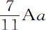
比摆长等于摆动体的阻力比其重力。如果阻力DK正比于速度平方变化，则图形BKVTa 极近似于抛物线，其顶点是V。轴为OV，因而近似等于
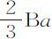
和OV构成的矩形。所以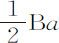
乘以Aa 等于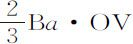
，所以OV等于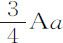
；所以点O对摆动体的阻力比其重力等于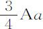
比摆长。我的这些结论其精度足敷实际应用。因为将椭圆或抛物线BRVSa 在中点V与图形BKVTa 合并，该图形如果在指向BRV或VSa 一侧较大，则在另一侧较小，因而近似与之相等。
命题31 定理25
如果在所有与掠过弧成正比的部分对摆动体的阻力按给定比率增大或减小，则下落掠过的弧与随后上升所掠过的弧长的差也将按同一比率增大或减小。
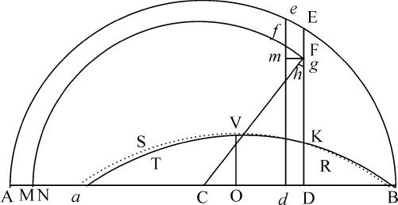
因为该差是由于介质阻力对摆的减速造成的，因而应正比于总减速和与之成正比的减速阻力。在前一命题中直线
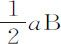
与弧CB，Ca 的差Aa 构成的矩形等于面积BKTa 。而如果长度a B不变，该面积正比于纵坐标DK增大或减小；即正比于阻力，因而正比于长度a B与阻力的乘积。所以Aa 与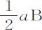
组成的矩形正比于a B与阻力的乘积，所以Aa 正比于阻力。证毕。
推论Ⅰ．如果阻力正比于速度，在相同介质中弧差正比于掠过的总弧长；反之亦然。
推论Ⅱ．如果阻力正比于速度平方变化，则该差正比于该弧长的平方变化；反之亦然。
推论Ⅲ．一般地，如果阻力正比于速度的三次或其他任意次幂，该差正比于整个弧长的相同次幂变化；反之亦然。
推论Ⅳ．如果阻力部分正比于速度的一次幂；部分正比于它的平方变化，则该差部分正比于整个弧长的一次幂，部分正比于其平方变化；反之亦然。因而，阻力及速度间的规律和比率与该差及弧长间的规律和比率总是相同的。
推论Ⅴ．所以，如果摆相继掠过不相等的弧，并能找出该差相对于该弧长的增量或减量比率，则也可以求出阻力相对于较大或较小速度的增量或减量比率。
总注
由这些命题，我们可以通过在介质中摆体的摆动来求介质阻力。我用下述实验求空气阻力。系在牢固钩子上的细线，下悬一木质球，球重
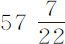
盎司，直径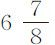
英寸，钩与球摆动中心的间距为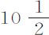
英尺。在悬线上距悬挂点10英尺1英寸处作一标记点；并在与该点等长的地方放置一把直尺，我就用这套装置观察摆所掠过的长度。然后记下球失去其运动的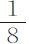
部分的摆动次数。如果将摆由其垂直位置拉开2英寸，然后放开，则在其整个下落中掠过一个2英寸的弧，而在由该下落和随后的上升组成的第一次全摆动中，掠过差不多4英寸弧，摆经过164次摆动失去其运动的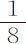
部分，这样，在它最后一次上升中掠过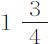
英寸弧。如果它第一次下落掠过的弧长为4英寸，则经过121次全摆动失去其运动的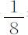
部分，在其最后一次上升中掠过弧长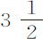
英寸。如果第一次下落掠过弧长为8，16，32或64英寸，则它分别经过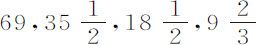
次摆动失去其运动的 部分。所以，在第1，2，3，4，5，6次情况中，第一次下落与最后一次上升所掠过的弧长的差分别是
部分。所以，在第1，2，3，4，5，6次情况中，第一次下落与最后一次上升所掠过的弧长的差分别是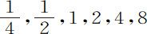
英寸。在每次情况中以摆动次数除差，则在掠过弧长为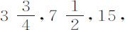
30，60，120英寸的平均摆动中，下落与随后上升掠过的弧长的差分别为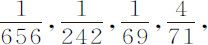
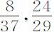
英寸。在幅度较大的摆动中这些差近似正比于掠过弧长的平方，而在较小幅度的摆动中略大于该比率；所以（由本编命题引推论Ⅱ）球的阻力在运动很快时近似正比于速度的平方，而在运动较慢时略大于该比率。现在令V表示每次摆动中的最大速度，A，B，C为给定量，设弧长差等于
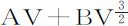
＋CV2 。由于在摆线中最大速度正比于摆动掠过弧长的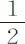
，而在圆周中则正比于该弧的 弦；所以弧长相等时摆线上速度大于圆周上的速度，比值为弧的
弦；所以弧长相等时摆线上速度大于圆周上的速度，比值为弧的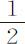
比其弦；但圆运动时间大于摆线运动，其比值反比于速度；因此该项弧差（正比于阻力与时间平方的乘积）在二种曲线上近似相等并不难理解：摆线运动中，该差一方面近似正比于弧与弦的比值的平方而随阻力增加，因为速度按该简单比值增大；另一方面又以同一平方比值随时间的平方减小。所以要在摆线中作此项观察，必须取与圆周运动得到的相同的弧差，并设最大速度近似正比于半摆弧或全弧，即正比于数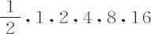
。所以在第2，4，6次情况中，V取1，4和16；而在第2次情况中弧差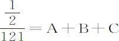
；在第4次情况中，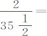
4A＋8B＋16C；在第6次情况中，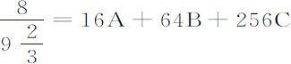
。解这些方程得到A＝0.0000916，B＝0.0010847，C＝0.0029558。所以弧差正比于0.0000916V＋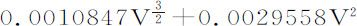
；因而由于（把命题30应用到该情况中）在速度为V的摆动弧的中间，球阻力比其重量等于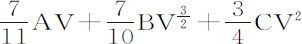
比摆长，代入刚才求出的数值，球阻力比其重量等于 比悬挂中心与直尺之间的摆长，即，比121英寸，所以，由于V在第2次情况中为1，第4次为4，第6次为16，阻力比球重量在第二次情况中等于0.0030345比121；第4次为0.041748比121；第6次为0.61705比121。在第6次情况中，细线上标记的点所掠过的弧长为 ，或 英寸。由于半径为121英寸，而悬挂点与球心之间的摆长为126英寸，球心掠过的弧长为 英寸。由于空气阻力的原因，摆动体的最大速度并不落在掠过弧的最低点处，而是接近于全弧的中点处，该速度近似等于球在无阻力介质中下落掠过上述弧的半长，即 英寸所获得的速度，以及沿上述化简摆运动而得到的摆线运动的速度；所以该速度等于该球由相当于该弧的正矢的高度下落而获得的速度。但摆线的正矢比 英寸的弧等于同一段弧比252英寸摆长的二倍，所以等于15.278英寸。所以摆的速度等于同一物体下落掠过15.278英寸的空间所获得的速度。所以球以该速度受到的阻力比其重量等于0.61705比121，或（如果只取阻力正比于速度的平方）等于0.56752比121。
我通过流体静力学实验发现，该木质球的重量比与它体积相同的水球的重量等于55比97；由于121比213.4也有相同比值，当这样的水球以上述速度运动时遇到的阻力，比其重量等于0.56752比213.4，即等于 。由于水球在以均匀速度连续掠过的30.556英寸的长度的时间内，其重量可以产生下落水球的全部速度，所以在同一时间里均匀而连续作用的阻力将完全抵消一个速度，它与另一个的比为 ，即总速度的 部分。所以在该球以均匀速度连续运动掠过其半径的长度，或 英寸所需的时间里，它失去其运动的 部分。
我还记录了摆失去其运动的 部分的摆动次数。在下表中，上面一行数字表示第一次下落掠过的弧长，单位是英寸。中间一行表示最后一次上升掠过的弧长；下面一行是摆动次数。之所以说明这个实验，在于它比上述失去运动 部分的实验更精确。有关计算留给有兴趣的读者。
第一次下落
最后一次上升
摆动次数
随后，我将一个直径2英寸，重 盎司的铅球系在同一根细线上，使球心与悬挂点间距 英尺，记录运动失去其给定部分的摆动次数。以下第一个表表示失去总运动 部分的摆动次数；第二个表为失去总运动的 的摆动次数。
第一次下落
最后一次上升
摆动次数
第一次下落

最后一次上升
摆动次数
取第一个表中的第3，5，7次记录，分别以1，4，16表示这些观察中的最大速度，并向前面一样一般取量V，则在第3次观察中有 ，第5次有 16C，第7次中有 。解这些方程得到A＝0.001414，B＝0.000297，C＝0.000879。因此，以速度V的球其阻力比其重量 盎司等于0.0009V＋ 比摆长121英寸。如果只取阻力的正比于速度平方的部分，则它与重量的比等于0.000659V2 比121英寸。而在第一次实验中阻力的这一部分比木球的重量 盎司等于0.002217V2 比121；因此木球的阻力比铅球的阻力（它们的速度相同）等于 乘以0.002217比 乘以0.000659，即 比1。两球的直径为 和2英寸，它们的平方相互间的比为 比4，或约等于 比1。所以这两个速度相等的球的阻力的比小于直径比的平方。但我们还没有考虑细线的阻力，它当然相当大，应当从已求出的摆的阻力中减去。我无法精确求出它的值，但发现它大于较小的摆的总阻力的 部分；因此在减去细线的阻力后，球的阻力的比近似等于直径比的平方。因为7 比 ，或 比1与直径的比 比1的平方差别极小。
由细线阻力的变化率较之大球的为小，我又以直径 英寸的球做了实验。悬挂点与摆心之间的摆长为 英寸，悬挂点与线上标记点间距 英寸，在摆第一次下落中标记点掠过弧长32英寸。在最后一次上升中同一标记点掠过弧长28英寸，中间摆动5次。弧长的和，或平均摆动总长60英寸；弧差4英寸。其 部分，或在一次平均摆动中下落与上升的弧差为 英寸。这样，半径 比半径 ，等于标记点在一次平均摆动中掠过的总弧长60英寸比球心在一次平均摆动中掠过的总弧长 英寸；差 与新的差0.4475的比值也与之相同。如果掠过的弧长不变，摆长按126比 的比值增加，则摆动时间增加，摆动速度按同一比值的平方变慢；使得下落与随后上升掠过的弧长的差0.4475保持不变。如果掠过的弧长按 比 增加，则差0.4475按该比值的平方增加，变为1.5295。如果设摆的阻力正比于速度的平方情况也与此相同。所以，如果摆掠过的总弧长为 英寸，悬挂点与摆心间距126英寸，则下落与随后上升的弧长差为1.5295英寸。该差乘以摆球的重量208盎司，得318.86。又，在上述木质球摆中，当摆心到悬挂点长为126英寸，总摆弧长 英寸时，下降与上升的弧差为 乘以 。该值乘以摆球重量 盎司，得49.396。我将差乘以重量目的在于求阻力。因为该差由阻力引起，并正比于阻力反比于重量。所以阻力的比等于数318.316比49.396。但小球阻力中正比于速度平方的部分，与总阻力的比等于0.56752比0.61675，即等于45.453比49.396。而在较大球中阻力的相同部分几乎等于总阻力，所以这些部分间的比近似等于318.136比45.453，即等于7比1。但球的直径为 和 英寸。它们的平方 与 间的比等于7.438:1，即近似于球阻力7和1的比。这些比值的差不可能大于细线产生的阻力。所以对于相等的球，阻力中正比于速度平方的部分，在速度相同情况下，也正比于球直径的平方。
不过，我在这些实验中使用的最大球不是完全球形的，因而在上述计算中，出于简捷，忽略了一些细小差别：在一个不十分精确的实验中不必为计算的精确性而担心。所以我希望再用更大更多形状更精确的球做实验，因为真空中的情形取决于此。如果按几何比例选取球，设其直径为4，8，16，32英寸，可以由实验数据按该级数推论出使用更大的球时所发生的情况。
为比较不同流体的阻力，我做了以下尝试。我制作了一个木箱，长4英尺，宽1英尺，高1英尺。该木箱不用盖子，注满泉水，其中浸入摆体，在水中使其摆动。我发现重 盎司，直径 英寸的铅球在其中的摆动情况如下表所示；由悬挂点到细线上某个标记点的摆长为126英寸，到摆心长 英寸。
第一次下落标记点弧长，单位英寸
最后一次上升弧长，单位英寸
正比于失去运动的弧长差，单位英寸
水中的摆动次数
空气中的摆动次数
在第4列实验中失去相同运动的摆动次数空气中为535，水中为
。在空气中的摆动的确略快于在水中的摆动。但如果在水中的摆动按这样的比率加快，使摆的运动在二种介质中相等，所得到的在水中的摆动次数却仍然是
，与此同时失去与以前相同的运动量；因为阻力增大了，时间的平方却按同一比值的平方减小。所以，速度相等的摆，在空气中经过535次，在水中经过 次摆动，所损失的运动相等。所以摆在水中的阻力比其在空气中的阻力等于535比
。这是第4列实验情况反映的总阻力的比例。
次摆动，所损失的运动相等。所以摆在水中的阻力比其在空气中的阻力等于535比
。这是第4列实验情况反映的总阻力的比例。
令AV＋CV2 表示球在空气中以最大速度V摆动时下落与随后上升掠过的弧差；由于在第4列情况中最大速度比第1列情况中的最大速度等于1比8；在第4列情况中的弧差比第1列情况中的弧差等于 比 ，或等于 比4280；在这两个情况中以1和8代表速度， 和4280代表弧差，则 或A＋80C＝535；然后解这些方程，得 和 ；所以正比于 的阻力变为正比于 。所以在第4列情形中，速度为1，总阻力比其正比于速度平方的部分等于 或 比 ；因而摆在水中的阻力比在空气中的阻力正比于速度平方的部分（该部分在快速运动时是唯一值得考虑的），等于 比 乘以535比 ，即571比1，如果在水中摆动时全部细线没入水中，其阻力将更大；于是在水中的摆动阻力，即其正比于速度平方的部分（快速运动物体唯一需要考虑的），比完全相同的摆以相同速度在空气中摆动的阻力，等于约850比1，即近似等于水的密度比空气密度。
在此计算中，我们也应该取摆在水中的阻力的正比于速度平方的部分；不过我发现（这也许看起来很奇怪）水中阻力的增加大于速度比值的平方。我在考虑其原因时想到，水箱相对于摆球的体积而言太窄了，这窄度限制了水屈服于摆球的运动。因为当我将一个直径仅1英寸的摆球浸入水中时，阻力几乎正比于速度的平方增加。我又做了一个双球摆实验，其较轻靠下面的一个在水中摆动，而较大在上面的一个被固定在细线上刚好高于水面的地方，在空气中摆动，它能维持摆的运动，使之持续长久。这套装置的实验结果如下表所示。
第一次下落弧
最后一次上升弧
正比于损失运动量的弧差
摆动次数
为比较两种介质的阻力，我还试验过铁摆在水银中的摆动。铁线长约3英尺，摆球直径约 英寸。在铁线刚好高于水银处，固定了一个大得使摆足以运动一段时间的铅球。然后在一个约能盛3磅水银的容器中交替注满水银和普通水，以使摆在这种不同的流体中相继摆动，找出它们的阻力比值；实验表明水银的阻力比水的阻力约为13或14比1；即等于水银密度比水密度。然后我又用了稍大的球，其中一个直径约 或 英寸，得出的水银阻力比水阻力为约12或10比1。但前一个实验更为可靠，因为在后者中容器相对于浸入其中的摆球太窄；容器应当与球一同增大。我拟以更大的容器用熔化的金属以及其他冷的和热的液体重复这些实验；但我没有时间全部重复；此外，由上述所说的，似乎足以表明快速运动的物体其阻力近似正比于它们于其中运动的流体的密度。我不是说精确地；因为密度相同的流体，粘滞性大的其阻力无疑大于滑润的；如冷油大于热油，热油大于雨水，而雨水大于酒精。但在很容易流动的液体中，如在空气、食盐水、酒精、松节油和盐类溶液，通过蒸馏滤去杂质并被加热的油、矾油、水银和熔化的金属中，以及那些通过摇晃容器对它们施加压力可以使运动保持一段时间，并在倒出来时容易分解成液滴的液体中，我不怀疑已建立的规则能足够精确地成立，特别当实验是用较大的摆体并运动较快时更是如此。
最后，由于某些人认为，存在着某种极为稀薄而精细的以太介质，可以自由穿透所有物体的孔隙；而这种穿透物体孔隙的介质必定会引起某种阻力；为了检验物体运动中所受到的阻力究竟是只来自它们的外表面，抑或是其内部各部分也受到作用于表面的阻力的作用，我设计了以下实验。我把一只圆松木箱用11英尺长的细绳悬起来，通过一钢圈挂在一钢制钩子上，构成上述长度的摆。钩子的上侧为锋利的凹形刀刃，使得钢圈的上侧在该刀刃上能更自由地运动；细绳系在钢圈的下侧。制成摆以后，我把它由垂直位置拉开约6英尺的距离，并处在垂直于钩刃的平面上，这样可使摆在摆动时钢圈不会在钩子上滑动和偏移；因为悬挂点位于钢圈与钩刃的接触点，是应当保持不动的。我精确记录了摆拉开的位置，然后加以释放，并记下了第1，2，3次摆动所回到的位置。这一过程我重复了多次，以尽可能精确地记录摆动位置。然后我在箱子中装满铅或其他近在手边的重金属。但开始时，我称量了空箱子的重量，以及缠在箱子上的绳子，和由钩子到箱子之间绳子的一半的重量。因为在摆自垂直位置被拉开时，悬挂摆的绳子总是以其半重量作用于摆。在此重量之上我又加上了箱内空气的重量。空箱的总重量约为装满金属后箱重的 。由于箱子装满金属后会把绳子拉长，增加摆长，我又适当缩短绳子使它在摆动时的摆长与空箱摆动时相同。然后把摆拉到第一次记录的位置处，释放之，数得大约经过77次摆动，箱子回到第二个记录位置，再经过相同摆动次数回到第三个位置，其后摆动同样次数回到第四个位置。由此我得到结论，装满重物的箱子所受到的阻力，与空箱阻力的比值不大于78:77。因为如果阻力相等，则装满的箱子的惯性比空箱的惯性大78倍，这将使它的摆动运动持续相同倍数的时间，因而应在78次摆动后回到标记点。但实际上是在77次摆动后回到标记点的。
所以，令A表示箱子外表面受到的阻力，B为对空箱内表面的阻力，如果速度相同的物体内各部分的阻力正比于物质，或正比于受到阻力的粒子数，则78B为装满的箱子内部所受到的阻力；因而空箱的全部阻力A＋B比满箱的总阻力A＋78B，等于77比78，由相减法，A＋B比77B等于77比1；因而A＋B比B等于77比1，再由相减法，A比B等于5928比1。所以空箱内部的阻力要小于其外表面阻力的5000倍以上。该结果来自这样的假设，即装满的箱子其较大的阻力不是来自任何其他的未知原因，而只能是某种稀薄流体对箱内金属的作用所致。
这个实验是凭记忆描述的，原始记录已遗失；我不得不略去一些已遗忘的细节；我又没有时间再将实验重做一次。我第一次实验时，钩子太软，装满的箱很快就停止摆动。我发现原因是钩子不足以承受箱子的重量，致使摆动过程中钩子时左时右地弯曲。后来我又做了一只足够坚硬的钩子，悬挂点不再移动，即得到上述所有情形。